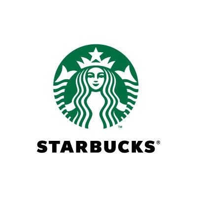

Starbucks
 History of Starbucks:
Headquartered in the Starbucks Center, the company was founded in 1971 by Jerry Baldwin, Zev Siegl, and Gordon Bowker at Seattle's Pike Place Market. During the early 1980s, they sold the company to Howard Schultz who – after a business trip to Milan, Italy – decided to make the coffee bean store a coffeeshop serving espresso-based drinks. Schultz's first tenure as chief executive, from 1986 to 2000, led to an aggressive expansion of the franchise, first in Seattle, then across the West Coast of the United States. Despite an initial economic downturn with its expansion into the Midwestern United States and British Columbia, the company experienced revitalized prosperity with its entry into California in the early 1990s through a series of highly publicized coffee wars. Schultz was succeeded by Orin Smith who ran the company for five years, positioning Starbucks as a large player in fair trade coffee and increasing sales to $5 billion. Jim Donald served as chief executive from 2005 to 2008, orchestrating a large-scale earnings expansion. Schultz returned as CEO during the financial crisis of 2007–08 and spent the succeeding decade growing its market share, expanding its offerings, and reorienting itself around corporate social responsibility. Kevin Johnson took over from Schultz in 2017, and continues to serve as the firm's chief executive.
Description:
Starbucks Corporation is an American multinational chain of coffeehouses and roastery reserves headquartered in Seattle, Washington. As the world's largest coffeehouse chain, Starbucks is seen to be the main representation of the United States' second wave of coffee culture. As of September 2020, the company had 32,660 stores in 83 countries, including 16,637 company operated stores and 16,023 licensed stores. Of these 32,660 stores, 18,354 were in the United States, Canada, and Latin America. Starbucks locations serve hot and cold drinks, whole-bean coffee, microground instant coffee known as VIA, espresso, caffe latte, full- and loose-leaf teas including Teavana tea products, Evolution Fresh juices, Frappuccino beverages, La Boulange pastries, and snacks including items such as chips and crackers; some offerings (including the annual fall launch of the Pumpkin Spice Latte) are seasonal or specific to the locality of the store. Depending on the country, most locations offer free Wi-Fi.